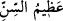

kudretiyle her şeyin üstünde ve üzerindedir.
el-Kevâşî’de belirtildiği üzere yaratılmışların sıfatlarından ve müşriklerin
sözlerinden yüce ve münezzehtir.
et-Te’vîlâtü’n-Necmiyye’de şöyle denilir: “Allah her dişinin neye gebe olduğunu”
bilir. Yani şu varlık âlemini oluşturan zerrelerden her birinin taşıdığı vahdâniyyet
delillerini bilir. Çünkü bu delilleri onların tabîatına yerleştiren ve şöyle buyuran O’dur:
“İnsanlara ufuklarda ve kendi nefislerinde âyetlerimizi göstereceğiz.” (Fussılet,
41/53)
Şâir şöyle der:
Âyet çıkarırsınız her bir şeyden
Allah’ın birliğine delâlet eden
Bir şâir de der ki:
Cihan bizim sevgilimizin güzelliğinin aynasıdır
Her zerrede sen de O’nu görme zevkini tat
Yine O, bu zerrelere yerleştirmiş olduğu özellikleri ve tabîatları bilir.
“Ve rahimlerin neyi eksiltip neyi artırdığını bilir.” Yani mevcûdâtın rahîmlerinin de
yok olanların (ma‘dûmât) rahimlerinin de neyi eksiltip neyi artırdığını bilir. Mevcûdâtın
rahimlerinde bulunan mukadderâtın rahimlerde kalıp dışarı çıkmayacaklarını da,
çıkanlarını da bilir.
“O’nun katında her şey bir ölçü iledir.” Yani gerek var ve yok olan şeylerin
rahimlerinden çıkan, gerekse bunlardan çıkmayan her şey O’nun ilim ve hikmetinde
muayyen bir miktar iledir. Öyle ki bu rahimlerden çıkanın çıkışı da kalanın kalışı da
O’nun hikmetine uygundur. Çünkü “O, görülmeyeni de görüleni de bilir.” Yani O,
hikmeti gereği varlıktan olma ve rahimlerden çıkmaktan gâib olanları da varlıkta ve
rahimlerden çıkışta şâhid olanları da bilir.
O, var ve yok olanlar ile bunların rahimlerinde bulunanları kuşatmış olması ve zâtı
itirabiyle “büyüktür”; kendisinden başka hiçbir varlığın sahip olmadığı sıfatları
îtibariyle de “yücedir.”
Şerhu’l-esmâi’l-hüsnâ’da der ki: “el-Kebîr, Kibriyâ büyüklük, azamet sahibi
demektir. Kibriyâ ise zâtın kemâlinden ibarettir. Zatın kemâli ile varlığının kemâlini
kasdediyorum. Varlığın kemâli ise iki şeye bağlıdır:
1- Ezelî ve ebedî olarak devam etmesi. Önceden veya sonradan yok olan her varlık
devamlı değildir, dolayısıyla da eksiktir. Bu yüzden var olma süresi uzayan insana
“büyük” denir. Bu, yaşı büyüktür ve baka süresi uzundur, demektir. Ancak bu insana: “
(yaşı azametli) denmez. Şu halde “el-kebir” kelimesi, “el-azîm” kelimesinin
kullanılmadığı yerlerde kullanılır. Baka süresi sınırlı olduğu halde var olma müddeti